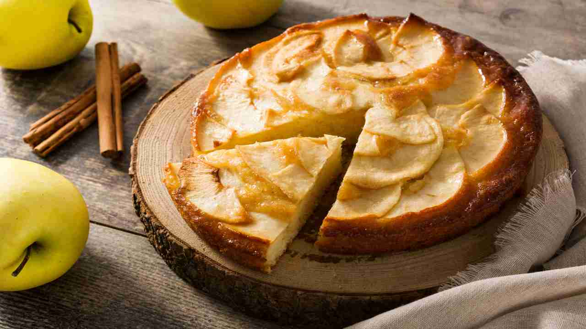

Apple pie

Un'alternativa alle solite mele
"Una mela al giorno, toglie il medico di torno..."
Così si dice, ma ammettiamolo quando vediamo la cesta della frutta sul tavolo, l'ultimo frutto che si vuole
mangiare è sicuramente la mela. Ecco perché voglio condividervi la mia ricetta della torta alle mele perfetta:
soffice e veloce da fare, ma sopratutto meglio di una noiosa mela!
Ingredients:
- 4 mele (1 kg)
- 1 limone
- 100 gr burro
- 120 gr zucchero
- 250 gr farina 00
- Lievito per dolci
- 150 gr latte intero a temperatura ambiente
- 2 uova a temperatura ambiente
- 1 cucchiaino di cannella
- 1 pizzico di sale
Instructions:
- Da tenere a parte: burro sciolto (il microonde va bene) e il limone trattato(da separe la scorza e il succo).
- Sbucciare le mele e tagliarle a pezzi: io consiglio di tagliare a 4, poi da lì tolgo il torso e taglio a metà le fette. Da lì li taglio in 6-8 pezzi simil uguali.
- In una ciotola, unire le mele, il succo di limone(così non si anneriscono) e un terzo dello zucchero.
- In un'altra ciotola, mettere le uova e lo zucchero per poi montare il composto. Quando il composto è schiarito e spumoso, aggiungere il burro fuso a filo, poi infine il pizzico di sale e la cannella.
- Nella farina, mettere direttamente il lievito in polvere e inserire nel composto, setacciandolo un po' ala volta. Se il composto diventa faticoso da mescolare, mettere a filo il latte e continuare a mescolare.
- Quando sarà pronto, scolare le mele dal succo di limone e incorporarle nella ciotola principale.
- Imburrare e cospargere di zucchero in una tortiera di 22 cm. A scelta, è possibile decorare con degli spichi sottili di mele mentre il forno viene preriscaldato a 180 gradi.
- Infornare e, dopo circa 55 minuti, fare sempre la prova dello stuzzicadente: se è asciutto allora la torta è pronta per esser servita!